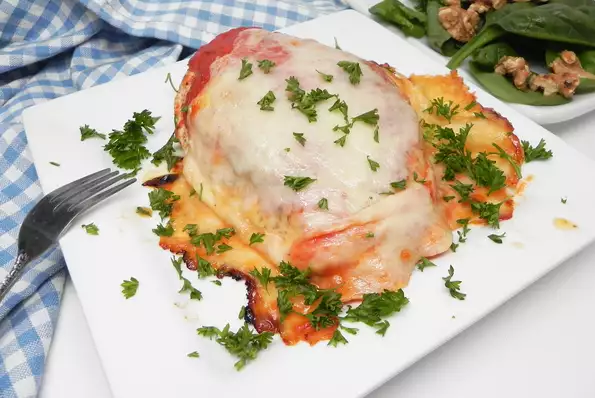

This recipe will teach you how to make a delicious chicken parm.
- 1 (16 ounce) package of skinless, boneless chicken breasts.
- 1 cup mozarella cheese
- 1 egg
- 1/2 cup milk
- 1 cup breadcrumbs
- 1 cup tomato sauce
- Cooking oil for frying
- Pour oil into a skillet and put it on medium heat. Slice chicken breasts into
desired thickness. Use a meat hammer on the breasts if desired for tenderness.
- Put breadcrumbs into one bowl. Put the egg and milk into another and mix well.
- Coat the chicken in the egg wash and dip in the bread crumbs.
- Check oil heat. Desired temperature is between 350 and 365.
- Fry chicken on one side until golden brown. Then flip and do the other. Repeat
for all the pieces.
- Put cooked chicken on a tray. Top with tomato sauce and mozarella cheese.
Place in oven on max temp broil until cheese melts.
Home